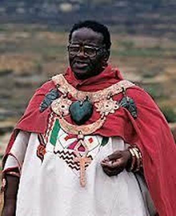

Credo Mutwa, os Zulus e os Reptilianos na África
Prefere Video?
Clica na Imagem a Baixo!!
1ª Parte
Um depoimento de “Credo Mutwa”, um importante ancião e antigo Shaman da Nação africana Zulu, da África do Sul. Uma rara e impressionante conversa com Rick Martin:
Tem sido dito que os antigos nativos de alguma tribo receberam as chaves do conhecimento antigo. Esta declaração nunca havia sido minuciosamente confirmada antes, mas após a recente entrevista que eu tive o privilégio de conduzir com o (Shaman) Zulu “Sanusi” Credo Mutwa a verdade emergiu cristalina.
“Tempos estranhos esses em que vivemos hoje, onde jovens e adultos são educados em escolas de falsidades. E aquele que ousa dizer a verdade é chamado ao mesmo tempo de lunático e tolo”.
- Castañeda

Vusamazulu Credo Mutwa
(nascido em 21 de julho de
1921 em KwaZulu-Natal,
África do Sul)
Através dos esforços e assistência de David Icke eu fui capaz de manter contato com o Dr. Johan Joubert que brilhantemente coordenou contato com Credo Mutwa permitindo assim que a entrevista ocorresse por telefone literalmente a meia distância do mundo na África do Sul. Tem sido dito que os antigos nativos de alguma tribo receberam as chaves do conhecimento. Esta declaração nunca havia sido minuciosamente confirmada antes após a recente entrevista que eu tive o privilégio de conduzir com o (Shaman) Zulu “Sanusi” Credo Mutwa agora com quase 90 anos de idade (à época da entrevista).
Nós do SPECTRUM gostaríamos de transmitir nossa profunda apreciação para David Icke e o Dr. Joubert pelos seus esforços em contatar esta lenda viva. Eu inicialmente ouvi falar sobre Credo Mutwa há 5 anos atrás sendo que naquela época impossibilitei-me em dialogar com ele por telefone devido que o mesmo habitava numa distante área sem comunicação. Quando eu soube por David Icke que ele tinha passado algum tempo com Credo Mutwa e que ele gostaria de conversar com o SPECTRUM, bem, assim foi feito.
Através da fantástica rede internacional de telecomunicação no dia 13 de agosto nós tivemos que conduzir uma sessão de entrevista que durou 4 horas! E não, nós não estamos falando em cancelar isto devido ao tamanho da entrevista. As palavras que ele nos transmitiu estão completamente inseridas no texto, sendo nossa norma – uma questão de respeito para com o apresentador bem como um bom e honesto jornalismo! Credo Mutwa é um homem que David Icke descreve como sendo: “O mais incrível e sábio homem que tem meu respeito e honra para chamá-lo como meu amigo, um gênio“.
Após conversar com Credo ele mudou seus valores. Eu gostaria de dizer que quando Credo ainda não era um homem instruído ele era uma pessoa capaz de soletrar todas as palavras Zulus ou Africanas, nomes próprios, etc. Para aqueles de vocês que talvez possuam escolaridade Africana sentirão que este nível de informação é mais avançado para suas pesquisas do que para a média dos leitores, logo certos cuidados foram tomados por Credo como sendo outra face de sua honestidade e exatidão.
Se você sente que você tem lido alguma recente matéria que amplia seus pensamentos e que desafia alguns valores e credos esta entrevista conduzirá você então a dar um passo além.
Como sempre a verdade É MAIS estranha do que a ficção.
Assim como a verdade – ou partes da verdade que foram reveladas para alguns de nós – que fazemos parte de um grande mosaico isto está sendo transmitido para cada um de nós para chegarmos às nossas próprias conclusões quanto a verdade que outros tem compartilhado conosco. Nós estamos honrados em ter esta oportunidade para apresentar as experiências e o conhecimento de Credo Mutwa com você.
Capa de um dos livros escritos por Credo Mutwa.
A impressionante informação apresentada por Credo Mutwa é certamente um provocante pensamento distante de alcançar suas implicações e objetivos. Uma vez que você tenha lido esta informação você compreenderá então por que existem tentativas para silenciá-lo. Similarmente você apreciará profundamente Credo Mutwa pela sua coragem em vir dizer a verdade independentemente das conseqüências.
Então sem mais comentários introdutórios iniciaremos a entrevista.
Martin: Primeiro de tudo, deixe-me dizer que é uma honra e um privilégio conversar com você e eu gostaria de agradecê-lo bem como com o reconhecimento de David Icke e o Dr. Joubert sem os quais não teria sido possível esta conversa. Nossos leitores estão conscientes da existência dos extraterrestres reptilianos mutáveis (mudança da sua aparência, através do mimetismo) e que eu gostaria de discutir com você a respeito especificamente sobre suas presenças, seus líderes, suas agendas e seus métodos de operação nesta época. Assim a primeira questão que eu gostaria de perguntar a você é : Você pode confirmar o que fazem realmente os extraterrestres reptilianos mutáveis que habitam atualmente nosso planeta? E se eles o fazem, você poderia confirmar isto mais especificamente sobre suas atuações. E de onde eles vêem?.
Credo Mutwa: Senhor, seu jornal pode enviar pessoas para a África?
Martin: Desculpe, você pode repetir?
Credo Mutwa: Seu jornal pode enviar alguém para a África no futuro próximo?
Martin: Nós estamos financeiramente incapazes de fazer isto no momento mas talvez este quadro reverta-se no futuro.
Credo Mutwa: É porque existem algumas coisas que eu gostaria que seu jornal verificasse além de mim. Você tem escutado sobre a cidade chamada Ruanda na África Central?
Martin: Sim
Credo Mutwa: As pessoas de Ruanda, as pessoas da Nação Hutu bem como as pessoas da Nação Watusi afirmam que eles não são as únicas pessoas na África que tem relatado que muitos de seus ancestrais foram uma raça de seres que eles chamavam de Imanujela que significa “os senhores que chegaram”. E algumas tribos no Oeste da África tais como Bambara também falam o mesmo. Eles dizem que eles vieram dos céus quando há muitas, muitas gerações atrás uma raça de seres altamente avançados chegaram, amedrontando-se com algumas criaturas que se pareciam como humanos que eles os chamavam de os Zishwezi.
A palavra Zishwezi significa o dival ou a criatura glidal que pode voar para o céu ou através da água. Todos, senhor, tem escutado sobre o povo Dogon na África Ocidental onde todos dizem terem recebido instruções dos seres normais mas eles não são – o povo Dogon são especiais – muitos povos na África tem declarado que sua tribo ou seu rei foi inicialmente fundado por uma raça de criaturas sobrenaturais que veio dos céus. Você ainda está na linha, senhor?
Martin: Oh, sim, bem atento. Por favor continue.
Credo Mutwa: Senhor, eu posso prosseguir mas deixe-me trazê-lo para conhecer meu povo, o povo Zulu da África do Sul.
Martin: Aceito. Por favor.
Credo Mutwa: O povo Zulu são conhecidos como um povo guerreiro sendo pessoas que pertenceram ao Rei Shakazulu no último século. Quando você pergunta aos antropologistas brancos da África do Sul o que significa o nome Zulu lhe dirão que isto significa “o céu” (sorrindo) e então o Zulu os chamam autodenominando-se de “o povo do céu”. Isso senhor não faz sentido. Na linguagem Zulu nosso nome para o céu, o céu azul é Sibakabaka. Nosso nome para o espaço interplanetário é Izulu e o Weduzulu que significa “espaço interplanetário” e o céu negro estrelado que você vê toda noite também tem a ver com viagens, senhor.
A palavra Zulu para viagens ocasionais como um nômade ou um cigano é Izulu. Agora você pode ver que o povo Zulu na África do sul estavam cientes do fato que você pode viajar através do espaço – não pelo céu como um pássaro – mas você pode viajar através do espaço e os Zulus dizem que há muitos, muitos milhares de anos atrás lá chegou dos céus uma raça de pessoas que eram como lagartos, pessoas que conseguiam mudar de aparência á sua vontade.
E pessoas que se casavam com suas crianças para um viagem (extraterrestre) gerando-se assim uma poderosa raça de reis e chefes tribais sendo que existem centenas de contos de fadas, senhor, no qual um lagarto fêmea (uma reptiliana) assumiu a identidade de uma princesa humana ao apoderar-se de seu corpo casando-se com a princesa Zulu. Todas as crianças das escolas na África do sul, senhor, conhecem a história de uma princesa chamada Khombecansini. Khombecansini teria se casado com um príncipe muito atraente chamado Kakaka que significa “o iluminado”.
Um dia enquanto Khombecansini estava catando lenha no bosque ela deparou-se com uma criatura chamado de Imbulu. E este Imbulu era um lagarto que possuía um corpo e os braços e pernas de um ser humano e uma longa cauda. E este lagarto disse para a princesa Khombecansini, “Oh, como você é linda garota e eu gostaria de ser como você. Eu gostaria de me parecer como você. Eu posso me aproximar de você?” disse o lagarto Imbulu para a princesa.
E a princesa disse “sim você pode”. E o lagarto que tinha uma história se aproximou da garota e cuspiu nos seus olhos e começou a transfigurar-se. O lagarto repentinamente mudou para uma aparência humana e começou a aparentar-se mais e mais como a garota, com exceção de suas pontudas unhas. E ele então bateu violentamente nela e o lagarto dominou a princesa e removeu todos os seus braceletes, bolinhas e veste de casamento. Então o lagarto tornou-se a princesa.
Agora haviam duas mulheres idênticas no bosque, o lagarto transformado em mulher e a verdadeira. E a mulher lagarto disse para a verdadeira mulher “agora você é minha escrava”. Agora você me acompanhará para o casamento. Eu serei você e você será minha escrava, vamos! Ela pegou uma vara e começou a bater na pobre princesa. E então ela partiu acompanhada por outras garotas que eram donzelas noivas de acordo com o costume Zulu e assim ela chegou no vilarejo do príncipe Kakaka.
Mas antes que eles alcançassem o vilarejo o lagarto transfigurado em princesa teve que fazer alguma coisa na sua cauda que é o que tinha que fazer de algum modo a mulher transformada para ocultar a sua cauda. Então ela mandou a princesa tecer uma rede de fibra e colocou sua cauda e amarrou-a apertadamente em si mesma. Ela agora aparentava-se como uma atraente mulher Zulu com grandes nádegas bem demarcadas. E então quando ela chegou ela tornou-se a esposa do príncipe Kakaka quando uma estranha coisa ameaçou suceder no vilarejo.
Todos os leites começaram a desaparecer por que toda a noite a princesa transformada, a falsa princesa desenrolava a sua cauda para sugar todo o soro de leite por um orifício na ponta de sua cauda. E a sogra indagou o que significava aquilo? Por que o leite está sumindo? E então ela disse, “não, eu vi, existe um Imbulu entre nós”. A sogra que era uma esperta antiga senhora disse “um buraco deve ser escavado na frente do vilarejo e ele deverá ser preenchido com leite”.
E assim foi feito. E então todas as garotas foram requisitadas a pularem no buraco. Elas pularam uma após a outra. E foi quando a mutante princesa foi forçada a fazê-lo também mas quando ela pulou sua longa cauda irrompeu sob a rede de sua saia e começou a sugar o leite através do orifício e então os guerreiros mataram o lagarto mutante. E assim a verdadeira princesa Kombecansini tornou-se a esposa do Rei dos Reis Kakaka. Agora, senhor, esta história possui várias versões em si mesma. Por toda a África do Sul entre muitas tribos você descobrirá histórias destas impressionantes criaturas que são capazes de se transformarem de um ser réptil para um ser humano e de réptil para qualquer outro animal de sua escolha.
E essas criaturas, senhor, realmente existem. Não importa por onde você vá pelo sudeste, oeste, leste e África Central, você descobrirá que a descrição dessas criaturas é idêntica. Até mesmo entre as tribos que nunca por toda a sua história mantiveram contato entre todos eles. Assim existem tais criaturas. De onde eles vem, senhor, eu nunca soube. Mas eles estão ligados com certas estrelas no céu e uma dessas estrelas é um grande grupo de estrelas que faz parte da via Láctea que nosso povo chamam-na de Ingiyab que significa “A grande serpente“. E existe uma estrela vermelha, uma estrela avermelhada próxima da ponta desta grande serpente de estrelas que nosso povo chama de Isone/Nkanyamba e eu descobri este nome no inglês.
Esta é a estrela chamada de a principal, a alpha (a principal estrela de uma constelação, que na realidade é a estrela Thuban da Constelação de DRACO, o DRAGÃO, como vista “na sua cauda”, em foto acima). Agora isto, senhor, é algo que vale a pena ser investigado.
Por que isto também é o que mais de 500 tribos espalhadas pela África que eu tenho visitado nos últimos 40, 50 anos ou mais tem descrito as mesmas criaturas?
Dizem que estas criaturas alimentam-se de seres humanos e que eles numa época desafiaram Deus para a guerra por que eles queriam controlar o universo. E então Deus travou uma terrível batalha com eles que foram derrotados, feridos e forçados a ocultarem-se nas cidades subterrâneas. Eles ocultaram-se em profundas cavernas subterrâneas por que eles sempre sentiam frio. Nestas cavernas nos foi dito que existem grandes lareiras que são mantidas por escravos, humanos e escravos zumbis (o estado mental da maioria absoluta da humanidade da superfície).
E é dito também que esses Zuswazi, esse Imbulu ou qualquer coisa que você prefira chamá-los não são capazes de ingerir alimentos sólidos. Eles tampouco ingerem sangue humano, mas eles se alimentam dessa força, a energia (ódio, medo, racismo) que é gerada quando os seres humanos na superfície da terra estão brigando e se matando aos milhares.
Darth Maul..Reptilian Chitauli do filme Star Wars
Eu encontrei pessoas que fugiram da antiga cidade de Masaki em Rwanda alguns anos atrás porque elas ficaram horrorizadas pelo o que estava acontecendo nas suas cidades. Eles disseram que o massacre dos Hutus pelo Watuzi e dos Watusi pelos Hutus está atualmente alimentando os monstros Imanujela. É por que o Imanujela absorve a energia que é gerada das pessoas quando elas estão sendo aterrorizadas ou assassinadas. Você ainda está me ouvindo, senhor?
Martin: Sim, eu estou na linha.
Credo Mutwa: Agora permita-me dizer-lhe uma coisa interessante, senhor. Se você estudar todas as línguas de todas as nações Africanas você encontrará dentro das línguas nas palavras de nosso povo que são parecidos com as do mundo oriental, oriente médio e até mesmo com as palavras dos índios americanos. E a palavra Imanujela significa “o senhor que chegou”. Uma palavra que alguém pode encontrar em Ruanda entre as pessoas Watusi e Rwandan Hutu é muito parecida com a palavra do hebreu Immanuel que significa “o senhor está conosco”. Immanujela significa “alguns que chegaram“, os senhores que estão aqui.
Nosso povo acredita, senhor, que nós pessoas desta terra não somos mestres de nossas próprias vidas embora façamos coisas achando que somos nós que fazemos. Nosso povo diz que os negros de todas as tribos, alguns iniciados e todos os Shamans de toda a África quando descobrem sua verdade eles compartilham seus profundos desejos com você então eles dizem que (com) o Immanujela existe Imbulu.
E existe outro nome pelo qual essas criaturas são conhecidas. Este nome é Chitauli. Agora a palavra Chitauli significa “os ditadores, alguns que nos transmitem a lei”. Em outras palavras “eles que nos dizem secretamente o que nós devemos fazer”. Agora dizem que esse Chitauli fizeram muitas coisas conosco quando chegaram neste planeta. Por favor me perdoe mas eu devo dividir esta história com você.
Esta é uma das estranhas histórias que você encontrará em qualquer lugar na África e em sociedades secretas shamânicas e em outros lugares onde o vestígio de nosso antigo conhecimento e sabedoria ainda estão preservados. Isto diz que originalmente a terra ficou encoberta por uma muito densa manta de neblina ou névoa. Essa pessoa realmente não conseguiu ver o sol no céu, mas um clarão de luz. E eles também viram a lua á noite como um suave clarão de luz no céu por que existia uma densa névoa.
E a chuva estava sempre jorrando constantemente em chuviscos. Não havia trovões. Não havia tempestades. O mundo estava coberto por grandes espessas florestas, selvas e as pessoas viviam em paz na terra naquela época. As pessoas eram felizes sendo que naquela época nós não tínhamos o poder de nos expressarmos verbalmente. Nós somente fazíamos sons e balbúcios como alegres macacos, mas nós não falávamos como nós falamos atualmente. E naqueles séculos as pessoas se comunicavam telepaticamente. Um homem poderia chamar sua esposa somente pensando nela, nas feições de seu rosto, no odor de seu corpo e ao tocar no cabelo de uma mulher.
Um caçador deveria ir ao bosque e chamar os animais para virem e assim um dos animais mais velhos e cansados seria selecionado por si mesmo devendo se oferecer para o caçador que o mataria instantaneamente levando-o para sua caverna. Não existia violência contra os animais. Não havia violência contra a natureza pelos seres humanos naquela época. O homem perguntava a natureza para poder alimentar-se. Ele utilizava isto quando se aproximava de uma árvore e refletia sobre os frutos e a árvore deixava alguns frutos caírem no chão e o homem os apanhava.
E assim é dito que quando o Chitauli chegou na terra eles chegaram em terríveis embarcações que flutuavam no ar, em embarcações que possuíam a forma de tigelas e que faziam um ensurdecedor barulho e terríveis labaredas no céu. E os Chitaulis disseram aos seres humanos que eles geraram fortes clarões luminosos e que eles eram os grandes deuses dos céus e que eles agora recepcionariam um valioso grupo presenteado pelos deuses.
Esses denominados deuses se pareciam com os seres humanos mas muito altos com uma comprida cauda e com tenebrosos olhos flamejantes sendo que alguns tinham dois brilhantes olhos amarelados – e alguns tinham três olhos vermelhos sendo que o terceiro olho ficava no centro de suas testas.
E então essas criaturas tomaram os grandes poderes que aqueles seres humanos possuíam: o poder de conversar e movimentar objetos pela mente e o poder de observar o seu futuro e passado e também o poder para viajar espiritualmente para diferentes mundos. Todos esses grandes poderes o Chitauli tomou dos seres humanos e lhes deram um novo poder, o poder da fala.
A mudança nos olhos de uma reptiliana (“Sasha Fierce”) se materializando em horário e momento indevido. Fenômeno conhecido como Shape Shifting nos EUA.
Mas os seres humanos infelizmente descobriram que o poder da fala dividiu os seres humanos em vez de uni-los por que o Chitauli habilmente criou diferentes linguagens (a lenda da torre de Babel) que dividiram as pessoas. Também o Chitauli fez algo que eles nunca tinham visto antes: eles deram aos seres humanos tarefas para eles e lhes disseram: “Estes são seus reis e estes são seus líderes”. Eles possuem nosso sangue neles. Eles são nossas crianças e você deve escutar essas pessoas por que eles nos falarão sobre o vosso comportamento. Se você não compreender nós o puniremos terrivelmente”. Antes da chegada do Chitauli, antes da vinda das criaturas Imbulu, os seres humanos eram seres espiritualizados.
Mas quando o Chitauli chegou os seres humanos tornaram-se divididos espiritualmente bem como pela linguagem. E então foi dado aos seres humanos novos estranhas emoções pelo Chitauli. Os seres humanos começaram a sentirem-se inseguros e começaram a construírem aldeias com fortes cercas de madeira ao redor. Os seres humanos começaram a formar países. Em outras palavras eles começaram a criar tribos e tribos por terras delimitadas que eles defendiam-nas contra algum possível inimigo. Os seres humanos tornaram-se ambiciosos e gananciosos procurando enriquecerem-se com gado e crustáceos. E a outra coisa que o Chitauli forçou os seres humanos a fazerem foi trabalharem em minas.
O Chitauli recrutou mulheres humanas para descobrirem minerais e certos tipos de metais. As mulheres descobriram cobre, ouro e prata. E eles eventualmente eram instruídos pelo Chitauli para fundirem esses metais e criar novos metais que jamais existiram na natureza antes como utensílios metálicos de bronze e outros objetos mais. E além disso o Chitauli descortinou a sagrada chuva que nevoava os céus e pela primeira vez desde a criação os seres humanos puderam observar as estrelas nos céus quando o Chitauli os contou que eles enganaram-se em acreditar que deus havia manifestado-se sobre a terra. “A partir de agora” o chitauli contou as pessoas terrenas “as pessoas da terra que eles devem acreditar que deus está no céu e que eles devem fazer coisas aqui na terra que agradem este deus que encontra-se no céu”.
Veja, originalmente os seres humanos tinham acreditado que deus estava na terra e que isso era uma grande mãe que habitava embaixo da terra por que eles viram todas as coisas esverdeadas crescendo sobre a mesma – o capim crescia do solo e as árvores cresciam da terra e as pessoas acreditavam que quando morriam iam para debaixo da terra. Mas quando os Chitaulis mostraram aos seres humanos o céu as pessoas começaram a acreditar que Deus está no paraíso e que aquele que morre nesta terra não vai para a debaixo da terra mas sim para o paraíso. E agora, senhor, percorrendo toda a África como um investigador você descobrirá então esta incrível faceta – estes duas incríveis idéias que divergem entre si.
Muitas tribos Africanas acreditam no chamado Midzimu ou Badimo. Agora a palavra Midzimu ou Badimo significa “eles que estão nos céus”. Mas na terra Zulu, dentre muitas pessoas você descobrirá esta incrível divergência de opiniões por terem passado de mãos em mãos. Existem Zulus que acreditam que algumas mortes são o Abapansi que significa “alguns que estão debaixo, são aqueles que estão sob a terra”. Mas existe uma outra idéia que diz Abapezulu. A palavra Abapezulu significa “aqueles que estão acima” e a palavra Abapanzi que é o antigo nome para os espíritos dos mortos significa “eles que estão sob a terra”.
Assim, até hoje, senhor, quase em todas as centenas de tribos na África você encontrará estas duas estranhas crenças que diz que quem morre vai para o céu e a outra de que o morto vai para debaixo da terra. Dizem que esta crença data-se dos dias em que nosso povo acreditou que Deus era uma mulher, a grande mãe cósmica. E esta crença é mantida pelo povo Abapezulu que diz que deus é um homem que mora nos céus. Agora, senhor, outra coisa que o Chitauli nos contou é que nós estamos aqui na terra transformando-a para adaptá-la para “Deus” vir um dia habitá-la. É dito que eles estão trabalhando para mudar este planeta e salvaguardá-lo para a grande serpente Chitauli vir e habitar este mundo recompensando-o com grande poder e riqueza.
Senhor, eu tenho observado por muitos anos de estudos, por muitos anos de iniciação dos mistérios da sabedoria e do conhecimento do shamanismo Africano por que nós seres humanos estamos atualmente destruindo este planeta em que vivemos. Nós estamos fazendo o que somente está sendo feito por uma outra espécie de animal, a saber, o elefante Africano que seguidamente tem destruído todas as árvores de seu ecossistema. Nós seres humanos estamos fazendo exatamente isto com nosso planeta.
E por onde você passar pela áfrica onde existiam grandes civilizações você encontrará um deserto. Por exemplo, existe o deserto de Kalahari na África do Sul e sob as areias daquele deserto eu descobri ruínas de antigas cidades mostrando que os seres humanos numa remota época guiaram-se para esta região desértica que já foi verde e fértil. E por alguns dias acompanhando exploradores de safari nas regiões do deserto do Sahara na África eu também encontrei evidências inacreditáveis de antigas habitações humanas em locais atualmente desérticos onde existe somente pedras e areias assobiando. Em outras palavras o deserto do Sahara foi uma grande nação agora desértica para os seres humanos. Por quê?
Eu me questiono muitas vezes porque que os seres humanos estão sendo direcionados a sentirem-se inseguros, vorazes e cobiçosos pelo poder para transformar o planeta terra num deserto incapacitando a vida humana? Por quê? Embora todos nós estejamos cientes dos terríveis perigos que isto nos causará, porque nós estamos desmatando grandes áreas de selva na África? Por que nós estamos cumprindo as diretrizes que o Chitauli programou para nós? Embora eu recuse aceitar isto, a resposta é um terrível sim, sim, sim. Mas dentre os sábios que me prestigiam com sua amizade é o Dr. Zecharia Sitchin que é um homem de grande sabedoria que vive em New York.
(Nota do Editor: Esta referência é para o Dr. Sitchin, autor de muitos controvertidos livros sobre a interação de seres extraterrestres com seres humanos em muitas épocas remotas).
George Bush, pai, observe os OLHOS com as pupilas verticais de um grupo de reptilianos, um sionista, nazista, duas vezes disfarçado como americano e como ser humano!! Quanto mais próximos da passagem de 2012, mais difícil será manter o seu disfarce.
De acordo com os antigos livros escritos pelos sumérios, além das escritas em barro, os deuses vieram dos céus e forçaram os seres humanos a trabalharem para eles em mineração de ouro. Esta história é confirmada pelas lendas Africanas em toda a África em que os deuses desceram dos céus e nos escravizaram de uma forma que nós nunca soubéssemos que éramos escravos. Uma outra coisa que nosso povo diz é que o Chitauli furtaram-nos como abutres. Eles idolatraram alguns de nós, implantaram-nos ódio e ambição e transformaram essas pessoas em grandes guerreiros criadores de guerras. Mas no fim, o Chitauli não permitiu que estes grandes líderes, chefes guerreiros e Reis morressem pacificamente.
O líder guerreiro é usado para gerar tantas guerras quanto possível para dizimar seu povo e seus inimigos e no fim o líder guerreiro falece cruelmente com seu sangue extirpado por outros. E estes incidentes eu vejo repetidamente. Nosso grande Rei Shaka Zulu lutou em mais de 200 grandes guerras durante o reinado de alguns 30 anos. E então foi massacrado cruelmente. Ele morreu derrotado após a morte de sua mãe já sem forças para vencer nenhuma outra batalha. E antes de Shaka Zulu, lá existia um outro rei que foi treinado por Shaka para tornar-se o grande rei que foi. Esse rei chamava-se Dingiswayo.
Dingiswayo tinha travado grandes guerras para unir o povo Zulu com uma grande tribo. Ele viu os brancos do Cabo com propósito de unir o seu povo para formar uma grande nação que seria capaz de repelir a ameaça de seu povo que o colocou na posição de um branco.
Mas o que aconteceu foi que após vencer muitas batalhas para unificar muitas tribos o Rei Disgiswayo subitamente sofreu de uma doença na vista que quase o cegou. Ele então ocultou em segredo que não enxergava mais. Mas esse terrível segredo foi desvendado por uma adolescente de uma outra tribo chamada Utombazi. Então Utombazi travou uma batalha com Dingiswayo degolando-o após tê-lo atraído para sua cabana por comida e bebida. Também existem similares fenômenos com grandes líderes brancos: Napoleão na Europa morreu miseravelmente na sua solitária ilha no oceano atlântico; Hitler também na Europa tendo uma terrível morte ao se suicidar com um tiro na boca, ao que sabemos; Attila o rei dos hunos foi assassinado por uma mulher e muitos outros grandes líderes que arruinaram-se após matarem e empobrecerem muitas pessoas.
O Rei Shaka Zulu foi estrangulado até a morte pelo seu meio irmão com a mesma lança que havia utilizado para matar outras pessoas. E Julio Cesar também esbarrou num similar destino após gostar de nossa Shaka Zulu (Cleópatra) e ter conquistado muitas nações. Sempre o herói guerreiro morre de uma forma que ele não deveria morrer.
“Sanusi” Credo Mutwa um dos últimos grandes Xamãs vivos da África, ele é um Zulu Sangoma e um Sanusi da África do Sul. Ele também é autor de vários livros.
O Rei Arthur na Inglaterra foi morto pelo seu próprio filho Mordred após um longo e corajoso reinado. Eu poderia continuar, senhor. Agora todas essas coisas juntas mostram-nos que se a pessoa ri ou zomba disto ou inexiste um poder que nos leva ao sombrio rio da auto-aniquilação. E em breve muitos de nós tornar-nos-emos cientes disto e o melhor seria que nós devêssemos ser capazes de lidar com este fato.